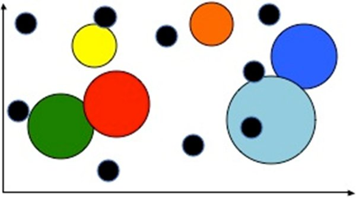
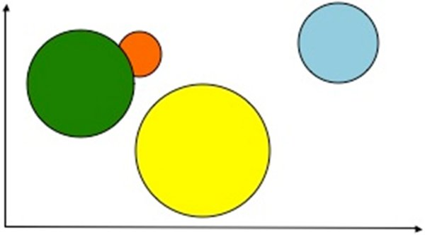
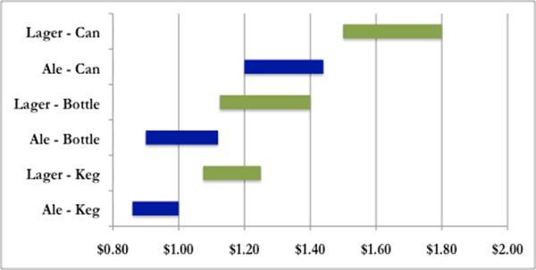
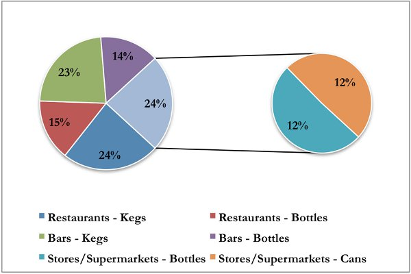

For the past year, you have been very busy purchasing and installing equipment, getting the necessary licenses and certifications to operate a brewery, and fine-tuning the brewing process. With everything in place, you are now ready to start producing and selling your beer. Entering the beer market as a new competitor will require a very sound strategic plan. There are many variables to consider and decisions to make, including pricing levels, staffing, production volume. For this year, many of your friends have offered to be your staff and you have agreed to pay them market rates in return for their service. Since many first-year businesses face considerably volatility, having your friends serve as your scalable work force seems like a smart option.
You first decide that your strategy should be focused on understanding your competitors. You decide to create two competitor matrices: one for the ale market and one for the lager market. You take into account the selling price of competitors’ beer, the relative quality, and their total sales in each particular segment (based on their financial statements for the previous year). In the graphs below, each circle represents a different competitor. The size of the circle represents each competitors’ revenues from the previous year relative the rest of the competition; larger circles represent companies with more sales than the others. The vertical axis represents the relative price of the beer; the lower the circle, the lower the actual selling price of that company’s product. The horizontal axis represents the relative quality of the beer; the circles towards the left of the chart are considered low quality, whereas those to the right are considered high quality. In developing your strategy for entering the market, you should focus on a combination of price and quality that does not strongly overlap with any particular competitor. Based on these charts, it appears that there would be an opportunity for a medium-quality, medium-priced ale and either a high-quality, medium-priced lager.


You also did some research on the relative price ranges for ales and lagers across the three packaging types (kegs, cans, and bottles). Note that these prices reflect the amount paid by restaurants, bars, stores, and supermarkets to beer producers. Recall that a keg holds 64 liters of beer, a bottle holds one half of a liter, and a can holds one third. Since it would be hard to compare the price of a keg to that of a can, you decide to look at the price range for each category on a per-liter basis. Kegs seem to have the lowest per-liter selling price, which seems reasonable since purchasers of kegs naturally pay for a higher quantity of beer. Cans have the most expensive price per liter. Further, it appears that most lagers sell at a premium to ales and have a slightly wider price range. Last year, 32 million liters of beer were consumed in Megapolis. Given the prices and quantities noted above, you estimate that the total market for beer was $30.0 - $57.6 million last year, depending on what mix of kegs, bottles, and cans were sold and at what price point for each.

Of the 32 million liters of beer consumed last year, sources indicate that 90% were ales, 5% were lagers, and 5% were stouts. If these sources are correct, then 28.8 million liters of ale, 1.6 million liters of lager, and 1.6 million liters of stout were purchased and consumed last year. You remember that the market reports you purchased last year suggested that the market would begin to shift towards the consumption of lagers and stouts, but at what rate and over what length of time you do not know. However, you can be fairly confident that there will be less than 28.8 million liters of ale consumed this year, with the difference leading to an increase in the lager and stout market segments.
As you get ready to enter the market, perhaps one of the most important things to do is prepare a production forecast. This implies determining how many liters of beer you are going to produce, which is determined by how many cycles per machine will be run during the year. In order to develop your production forecast, you decide to create best-case and worst-case scenarios in terms of market share for a new brewer. The two factors you focus on the most are the amount of competition and the overall growth prospects for each market category. You have found that there are many competing producers of ale, which can be expected given the fact that ales have dominated the beer market for many years. While there are many competitors, there is no clear leader; the largest producer controls only 20% of the market. You consider this to be positive, since it would be much more difficult to penetrate the market if one competitor controlled upwards of 50% of the total supply. However, market forecasts suggest there is little room for growth in the ale market (beyond the inflation rate). In fact, all the reports suggested a decline in ale consumption over the next ten years. Conversely, the lager market has much less competition and higher prospects for growth.
Each one of your beer machines can brew 100,000 liters per cycle. If demand for beer in the coming year were to remain at 32 million liters, 100,000 liters would represent 0.3% of the market. After running some different forecast models, you believe that you could expect to capture 2-6% of the ale market and 5-11% of the lager market. However, your penetration rate will depend on how skillful you are marketing and promoting your product, how well you forecast consumer preference for packaging, and the way the overall beer market goes with respect to ales, lagers, and stouts. You need to decide which machines you are going to run this year and how many cycles would need to be brewed to represent a reasonable market share for your products.
Once you have determined how much beer will be produced in the coming year, it is time to decide on the split between packaging options. Your local Chamber of Commerce recently reported that citizens of Megapolis continue to enjoy a reasonably high standard of living and tend to eat out at restaurants and bars frequently. As you were doing some research on the internet, you came across the following chart that illustrates the breakdown of consumer purchasing patterns depending on where they consumed beer. Though it is a few years old, the report seems to be from a good source and you have no reason to believe that there have been any dramatic changes in consumer behavior since then.

From your own experience as a consumer, your preferences run similar to the chart above with one exception: you tend to prefer lagers from a keg or bottle, rather than a can. You read in a beer trade magazine that the aluminum in can packaging does not keep lager’s freshness as well as kegs and bottles. As a result, lager from cans tends to taste very different than the same lager from kegs or bottles. There is no discernable difference in the taste of ales between kegs, cans, and bottles, though. This leads you to believe that the chart above might serve as a good starting point for deciding on how to package your beer.
One aspect you need to consider is that you are a new competitor in the market and consumers will not be familiar with your beer. You need to think of every way possible to increase the amount of exposure to your product. While supermarkets and stores do have customers at all hours of the day, not all of them will pass by the beer section. Their staffs are also unlikely to promote your product themselves since they do not benefit by doing so. Further, most people go to supermarkets already knowing what it is they are going to purchase, which reduces the probability of them purchasing a product they are not familiar with. Aside from supermarkets and stores, the other large purchasing groups for beer are restaurants and bars. If you were to sell your kegs to restaurants at a slightly reduced price, the managers and staff might try harder to sell your product to patrons. Based on the data above, you need to decide how you will divide your beer output between kegs, bottles, and/or cans.
While certain expenses, such as rent and staffing, are dependent on how much beer you are producing, there are other expense categories that are at your discretion. These include Marketing, Product Development, Promotional Activities, and Community Development. Marketing expense and Promotional Activities include actions related to advertising your product, including website development, print advertisements, television commercials, etc. as well as special events, contests, and prizes that provide incentives for customers to try your product. Marketing is very important for new beer competitors since it aids in consumer product awareness.
Product Development expense determines how much you spend on experimenting with the brewing process to develop a better-tasting beer. It may happen that consumers do not like the exact type of beer you brew, due to the types and amounts of ingredients used. An investment in Product Development will help tailor your beer to suit customers’ preferences and ensure the highest-quality beer relative your capabilities. Since you do not have any direct consumer feedback yet as it is your first year brewing, you think this might be an important expense.
Community Development expense is related to how much you give back to the citizens of Megapolis through community improvement projects and donations to local charitable organizations. It is important to help your community and it also serves to create a positive reputation for your business as being socially responsible.
Since these expenses should be set at a level that corresponds with the size of your business, you think each expense category should be tied to the forecasted revenue for the coming year. You need to decide the percentage of forecasted sales you will spend in each of these four areas.